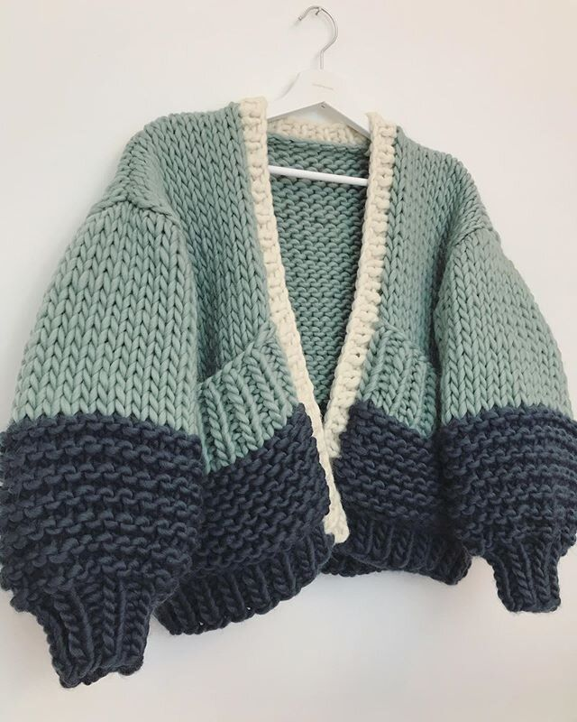
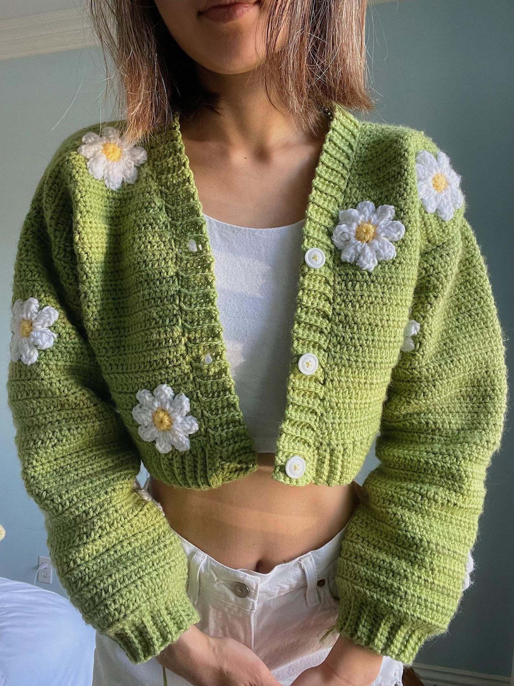

Jaket qadın qarderobunun həm rahat, həm də zərif geyim əşyasıdır. Ciddi üslubun əsas elementi olan pencəklərdə gəzmək bəzən bizə sıxıcı gəlir.
Jaket isə bizə özümüzü daha azad və sərbəst hiss etdirən əla seçimdir. Bu il isə daha çox “oversize” jaketlər trenddir.
Lent.az havalarda sizi isti və dəbli saxlayacaq jaketləri təqdim edir:
 Aşağıdakı videodan siz daha çox jaketlərlə tanış ola bilərsiniz